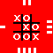
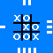
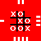
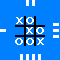

Exemplo de posicionamento relativo Na última das figuras 4 figuras abaixo determinamos um posicionamento relativo de 10 pixels do topo e 10 pixels a partir da esquerda de onde a imagem normalmente deveria iniciar: 
Exemplo de posicionamento relativo
Na última das figuras 4 figuras abaixo determinamos um posicionamento relativo de 10 pixels do topo e 10 pixels a partir da esquerda de onde a imagem normalmente deveria iniciar:
